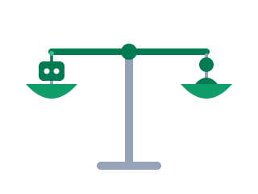
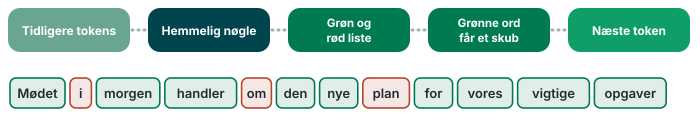
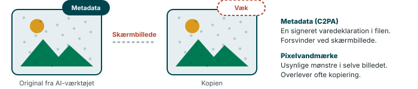

Dag 4
Bias, AI Act, deepfakes og bæredygtighed, med dialogspil og svære valg. Om eftermiddagen automatisering, en live-demo, agenter og RAG.

Dagens overblik
Dag 4 er den store opsamling. Første halvdel handler om ansvar: hvornår tager AI fejl, hvad siger loven, hvad kan teknologien misbruges til, og hvad koster den i strøm og vand. Anden halvdel er praktisk: automatisering med RPA og flows, en live-demo, tid til det vigtige, agenter og RAG. Programmet er skåret til, så der er luft til øvelserne. De detaljerede dias ligger i et bilag bagest i hvert diassæt, til opslag.
UCL’s diasshow: Dag 4
Ansvar, regler og bæredygtighed, som følges i programmet lige nedenfor.
Program: ansvar og regler
Følg UCL-sporet fra venstre mod højre. Brug højre kolonne, når du vil koble dagens emne til en praktisk aktivitet.
| UCL’s diasshow | Mine udvidelser |
|---|---|
| Opsamling og dagens plan Slides 1-3: Refleksion fra sidst, og hvad dagen indeholder | Modul 6: Kursets røde tråd Den samme opsamling set på tværs af hele forløbet. |
| Rammerne Slide 4: En hurtig påmindelse om målet, det ekstra materiale og spillereglerne fra dag 1 | Rammerne på dag 1 Og reglen om at øve som privatperson. |
| Bias Slides 5-7: Hvad er bias, hvem ejer chatbotterne, og hvordan svarer de om de danske partier? | Modul 6: De store diskussioner Bias som en af de store debatter, du nu kan deltage i. |
| Hallucinationer Slides 8-11: Billedeksempler, og når modellen svarer forkert med overbevisning | Modul 2: Hallucination Hvorfor det sker, og hvordan du fanger det i en arbejdsopgave.Dias 8 · Udvid Modul 2: HallucinationSjovt på et billede. Dyrt i et referat. |
| Øvelse og drøftelse Slides 12-13: Spørg en chatbot om dens egen bias, og drøft om AI udgør en trussel | Øvelserne på denne side Spørgsmålene står klar til at kopiere ind.Dias 13 · Udvid PapirklipsenTankeeksperimentet: skaden kræver ikke ond vilje. |
| AI Act: hvad og hvorfor Slides 14-15: Hvorfor loven findes, og hvordan den er bygget op | Begrebstabellen på denne side De fire risikoniveauer samlet, så de er nemme at slå op. |
| Din rolle og tidslinjen Slides 16-17: Udbyder eller idriftsætter, og hvornår reglerne gælder efter EU’s Digital Omnibus | Mit eget dias. Modul 4: Governance Samtalen med IT og ledelse om jeres egne løsninger. |
| Dialogspil: AI Act på min arbejdsplads Slide 18: Sortér eksempler i risikoniveauer, drøft dilemmaer i roller, og kortlæg din egen arbejdsplads. Cirka 65 minutter | Mit eget dias. Spilleplade, kort og arbejdsark uddeles i lokalet. |
| Forbudt AI Slides 19-20: Hvad må AI ikke vise? Copilot og ChatGPT på det samme spørgsmål | Modul 1: Guardrails De samme sikkerhedsmekanismer set nedefra i et byggeværktøj.Dias 19 · Udvid Modul 1: GuardrailsDu så guardrails nedefra, da byggeværktøjet sagde nej. |
| AI som trusselbillede Slides 21-22: Hvorfor angreb skalerer hurtigere end mennesker | Papirklipsen Tankeeksperimentet om et harmløst mål, der forfølges grænseløst. |
| Deepfakes Slides 23-25: Hvad de er, et eksempel, og hvordan man spotter dem | Modul 5: Modaliteter Samme teknologi brugt konstruktivt: tekst til tale og lyd. |
| Mærket som AI Slides 26-29: Artikel 50, vandmærker gemt i tokens og pixels, og tjek af dit eget AI-billede | Mit eget dias. Vandmærker på denne side Illustrationerne og øvelsen, klar til at slå op. |
| AI i de forkerte hænder Slides 30-32: Misbrug, svindel og hvad vi skal være opmærksomme på | Modul 6: De store diskussioner Kontrol, ansvar og retning, når AI bruges forkert. |
| Rettigheder til AI-materiale Slides 33-34: Hvem ejer det genererede, og hvad afhænger af platformens vilkår? | Dag 2: Etik og ophavsret Fire tekster om træningsdata, samtykke og betaling.Dias 33 · Udvid Dag 2: Etik og ophavsretFire tekster om, hvem der ejer det, modellen er trænet på. |
| Bæredygtighed med gætteleg Slides 35-39: Gæt først, og se så svarene om strøm, vand og danske datacentre. Slide 36 er mit eget | Tallene på denne side Regnestykkerne samlet med kilder.Dias 35 · Udvid Dag 3: Googles egen måling0,26 ml vand pr. tekstprompt. Begge tal kan passe. |
| Svære valg Slide 40: Dilemmaer med to muligheder og ingen mellemvej. Alle stemmer, og én fra hver side forklarer | Mit eget dias. Samtaler og drøftelser Flere spørgsmål til grupperne. |
| Opsamling og evaluering Slides 41-42: Hvad tager I med jer fra i dag? | Prøven Saml dine eksempler, mens de er friske. |
| Bilag: til opslag Slides 43-102: UCL’s detaljerede dias om bias, risikoniveauer, risikovurdering, hvornår loven ikke gælder, forbudt AI, deepfakes og bæredygtighed. De gennemgås ikke, men ligger klar til fordybelse | Modul 4: Governance Til dig, der vil dykke ned i højrisiko og ansvar.Dias 65 · Udvid Modul 4: GovernanceUddannelse er højrisiko. Derfor er samtalen med IT ikke valgfri. |
Andet spor: Anvendelse af kunstig intelligens, gang 4
Automatisering, agenter og RAG. Prompting-metoderne ligger i bilaget til selvstudie. Det er dette spor, dagens tekster og videoer hører til.
Program: automatisering
| Diasshowet | Mine udvidelser |
|---|---|
| Velkomst og plan Slides 1-2: Eftermiddagens seks trin, med luft til øvelserne | Modul 1: Prompt og sprogmodel Begreberne fra din første app. |
| Økonomi og jobs Slides 3-6: Tre grafer om priser, danske tal og effekten på jobs | Papirklipsen: zero human companies Hvor peger økonomien hen, når agenter overtager opgaverne? |
| Automatisering er ikke AI Slides 7-9: Hvad automatisering er, hvad AI er, og hvorfor de to ikke er det samme | Modul 4: Hvorfor automatisering? Den samme skelnen med udgangspunkt i din egen hverdag.Dias 7 · Udvid Modul 4: Automatisering er ikke AISamme skelnen, med eksempler fra din egen hverdag. |
| RPA, BPA og IA Slides 10-12: Forskellene, sikkerheden og hvordan du kommer gratis i gang | Modul 4: Find din gentagelse Start med den opgave, du laver igen og igen. |
| Power Automate flows Slides 13-14: Microsofts automatiseringsplatform | Modul 4: Byg dit første flow Trin for trin i Power Automate eller Apps Script.Dias 13 · Udvid Teknik: webhooks og Apps ScriptPower Automate uden loft: samme flow i kode. |
| Grundmodellen og demoen Slides 15-16: Kæden fra handling til resultat, og vi kører den live med holdets egne svar | Demoen på denne side Og Modul 4: Grundmodellen bag demoen. |
| Tid til det vigtige Slide 17: Positiv Lean. Hvad drømmer du om at få tid til, og hvilke tidsrøvere kan AI tage? Cirka 60 minutter | Mit eget dias. Tid til det vigtige (PDF) Arbejdsark, tidsrøverkort og løftestrimler. Vi bruger dem på papir i lokalet. |
| AI-agenter Slides 18-20: Nøgleegenskaber, typer af agenter, og byg din egen | Modul 3: Agenter i Copilot Byg din egen agent til en opgave fra dit job. Vil du mere teknisk, så prøv ekstramodulet med Claude Code.Dias 20 · Erstat Modul 3: Byg agentenByg en agent i Copilot til en opgave fra dit eget job. |
| RAG Slides 21-22: Retrieval Augmented Generation, og hvorfor kildeforankring reducerer fejl | Modul 5: Kildeforankring Samme princip prøvet af i NotebookLM.Dias 21 · Erstat Modul 5: Byg din notesbogRAG forklaret er abstrakt. RAG prøvet tager 20 minutter. |
| Evaluering Slide 23: Hvad virkede, og hvad skal være anderledes? | Evaluér dagen Formularen ligger nederst på siden. |
| Bilag: til opslag Slides 24-177: UCL’s dias om prompting-metoder (chaining, chain of thought og meta-prompting), flere økonomital, RPA i detaljer, »Giver det mening?«, opgaver og METR-kurven. De gennemgås ikke, men ligger klar til selvstudie | Øvelse 2 og metaprompten Valgfrit selvstudie, hvis du vil prøve prompting-metoderne af.Dias 169 · Udvid Modul 4: Fortæl det videreDet spreder sig, når du kan forklare det uden fagsprog. |
Demoen: kæden live
Her ser vi grundmodellen køre i virkeligheden. Al automatisering følger den samme kæde: en handling udløser en trigger, som udfører en eller flere handlinger, og resultatet opstår et helt andet sted.

- Du udfylder en kort formular fra telefonen: en god idé fra kurset, du vil tage med hjem på din arbejdsplads, eller et emne, du overvejer til din erhvervscase.
- På storskærmen dukker holdets svar op i et helt andet program, som kort på en tavle. Ingen rører noget undervejs.
- Bagefter åbner vi maskinrummet og ser, hvordan kæden er bygget i Make: triggeren, handlingerne og filtrene.
- Til sidst drøfter vi: hvor i din hverdag ligger der en gentagelse, som sådan en kæde kunne bære? Og hvad skulle der til, før den blev bygget hos jer?
Samtaler og drøftelser
Refleksion fra sidst
Hvad tog I med jer fra sidste gang, hvad har I tænkt over siden, og er der spørgsmål, der er dukket op?
Udgør AI en trussel?
Drøft med din sidemakker: Udgør AI en trussel? Hvordan kan AI potentielt være farlig? Og hvordan mener du, den kan misbruges?
Hvad må AI ikke vise?
Hvad tænker I, at AI ikke må vise? Hvorfor tror I ikke, den må vise det? Og hvad kunne risikoen være? Bagefter sammenligner vi med Copilots og ChatGPTs egne svar.
Så det naturligt ud?
Efter videoeksemplet: Så det naturligt ud? Lagde I mærke til noget, der var »off«? Typiske tegn er unaturlige ansigtsbevægelser, mærkelig læbesynkronisering, ulogisk lys og en flad stemme.
Øvelser
- Vælg en chatbot, du bruger til daglig, og spørg den, hvilken bias den selv mener at have.
- Stil det samme spørgsmål til en anden chatbot, og sammenlign svarene.
- Spørg til noget konkret og politisk ladet, og læg mærke til, hvornår den bliver forsigtig, og hvornår den svarer skarpt.
- Drøft: hvem ejer den chatbot, du brugte, og hvad kunne deres interesse være?
Prompting-metoderne gennemgås ikke på dagen. Diasene ligger i bilaget i det andet diassæt, hvis du vil prøve dem af selv.
- Prompt chaining: stil et indledende spørgsmål, følg op med to-tre opfølgende spørgsmål, og bed til sidst modellen om at opsummere hele emnet.
- Chain of Thought, tilføjelse: tag en opgave med flere trin, og skriv »tænk trin for trin« til sidst i prompten. Sammenlign med svaret uden.
- Chain of Thought, guidet: beskriv selv de trin, du vil have modellen til at følge, og bed den arbejde i den rækkefølge.
- Meta-prompting: brug metaprompten nedenfor, og lad modellen bygge prompten sammen med dig.
Metaprompten (valgfrit selvstudie)
UCL’s færdige meta-prompt. Indsæt den i Copilot eller en anden chatbot, og lad den interviewe dig, indtil prompten er god. Brug knappen Kopiér for at tage den med.
- Find den: tænk din hverdag igennem, og find de opgaver, der gentager sig og følger faste regler. Skriv tre af dem ned.
- Beskriv en RPA-opgave: vælg én af dem, og beskriv den trin for trin, som du ville forklare den til en ny kollega. Hvor klikkes der, hvad skrives hvor, og hvornår er den færdig?
- Vurdér: kan RPA, et flow eller en agent hjælpe her? Og hvad ville det kræve af data og adgange?
- Byg din egen agent: lav en simpel agent, der løser en afgrænset opgave for dig. Start med formålet, hvilke kilder den må bruge, og hvad den ikke må gøre.
Begreber fra dagen
AI Act: de fire risikoniveauer
| Niveau | Hvad det betyder |
|---|---|
| Uacceptabel risiko | Forbudt. Manipulerende AI, social scoring, biometrisk overvågning i visse tilfælde og følelsesgenkendelse i særlige sammenhænge. |
| Høj risiko | Tilladt, men kun under strenge krav om dokumentation og kontrol. For eksempel kritisk infrastruktur, uddannelse og eksamen, ansættelse, kredit og forsikring. |
| Begrænset risiko | Krav om gennemsigtighed. Chatbots og deepfakes skal kunne genkendes som AI. |
| Minimal risiko | Ingen væsentlige ekstra krav. Spamfiltre og AI i videospil. |
- Identificér AI-systemet og anvendelsen.
- Afgør risikoniveauet.
- Vurder konteksten.
- Fastlæg krav og ansvar, og husk forskellen på udbyder og bruger.
- Dokumentér og overvåg.
Ansvar og risiko
| Begreb | Kort forklaring |
|---|---|
| Bias | Systematisk skævhed i data eller output. Kommer fra historiske mønstre, valg i design og træning og manglende diversitet i udviklingen. |
| Hallucination | Modellen svarer forkert, men overbevisende. Den forudsiger det sandsynlige, ikke det sande. |
| Deepfake | AI-genereret falsk video, lyd eller billede. Kombinerer maskinlæring, computer vision, generative modeller og stemmekloning. |
| GPAI | General Purpose AI: alsidige modeller som ChatGPT og Copilot, der kan bruges til mange formål og har egne krav om gennemsigtighed. |
| Rettigheder | Rent AI-genereret materiale har typisk ingen ophavsret. Er AI brugt som værktøj i en menneskelig kreativ indsats, ligger rettigheden hos mennesket. Platformens vilkår gælder også. |
Prompting og automatisering
| Begreb | Kort forklaring |
|---|---|
| Zero-shot prompting | Du stiller opgaven uden at give eksempler på et godt svar. Det er sådan, de fleste bruger en chatbot. |
| Prompt chaining | Flere prompts i en kæde, hvor hvert svar bygger på det foregående og opbygger kontekst. |
| Chain of Thought | Du beder modellen arbejde trin for trin. Kan gøres som tilføjelse, som sammenkædning eller som en guidet rækkefølge, du selv beskriver. |
| Meta-prompting | Modellen hjælper dig med at skrive prompten, ved at stille dig spørgsmål og revidere undervejs. |
| RPA | Robotic Process Automation: software, der efterligner en brugers klik og tastetryk i faste, regelbaserede opgaver. |
| BPA og IA | Business Process Automation automatiserer hele arbejdsgange. Intelligent Automation er RPA og AI sat sammen. |
| AI-agent | Et system, der selv planlægger og udfører trin mod et mål. Findes som reaktive, hukommelsesbaserede, målbaserede og lærende agenter. |
| RAG | Retrieval Augmented Generation: modellen slår op i dine egne kilder, før den svarer, og prioriterer ny information frem for træningsdata. |

Hvor stor en opgave kan AI bære alene?
Begrebstabellen ovenfor slutter ved AI-agenten. Grafikken her viser, hvor hurtigt agenternes rækkevidde vokser: opgavestørrelsen måles i den tid, opgaven normalt tager et menneske, og den er ifølge METR's målinger fordoblet cirka hver syvende måned siden 2019.

Kilde: METR (metr.org), undersøgelsen Measuring AI Ability to Complete Long Software Tasks
METR måler kurven. Matt Shumers essay Something Big Is Happening er påstanden om, hvad den betyder. Vi tog grafikken og spørgsmålene på dag 3. De ligger også som dias 173 og 174 i bilaget i diasshowet ovenfor. Drøft i grupper:
- Hvad kommer det til at betyde for din arbejdsplads, hvis en agent om få år kan bære en uges arbejde?
- Hvad betyder det for dig? Hvad i din rolle bliver mere værd, og hvad bliver automatiseret?
- Hvilken opgave ville I give en agent først, og hvor skal godkendelsesporten sidde?
- Shumer siger: lær værktøjerne nu. Kritikerne siger: store omvæltninger tager tid. Hvem tror I mest på, og hvad gør I i det kommende år?
Læs essayet på shumer.dev, og find både introduktionen og modkritikken i læsetippet i modul 6.
Mærket som AI: vandmærker og artikel 50
Siden august 2026 skal AI-genereret indhold kunne genkendes som AI. Det står i artikel 50 i AI Act, som hører til risikoniveauet begrænset risiko. Reglen har fire dele: chatbots skal sige, at de er AI, AI-indhold skal mærkes maskinlæsbart, deepfakes skal oplyses, og AI-tekst om samfundsforhold skal mærkes, medmindre et menneske har redigeret og står inde for den.
Vandmærke i tekst
Mærket gemmes i token-valget. En hemmelig nøgle deler ordforrådet i en grøn og en rød liste, og de grønne ord får et lille skub. Den, der har nøglen, kan tælle sig frem til mærket. Læseren kan ikke se det.

Vandmærke i billeder
Billeder mærkes i to lag: usynlige mønstre i selve pixelsne og en signeret varedeklaration i filen (C2PA).

- Find billedet, du lavede med AI på dag 2, og brug den originale fil, ikke et skærmbillede.
- Upload det på contentcredentials.org/verify. Står der, hvilket værktøj der har lavet det?
- Tag et skærmbillede af billedet, og upload det igen. Hvad er der tilbage?
- Upload kun billeder uden personer og uden fortroligt indhold.
Illustrationerne, opslagsarket og øvelsen samlet i én fil: Mærket som AI: vandmærker og artikel 50 (PDF).
Kilder: EU-Kommissionen om kodeksen for mærkning af AI-genereret indhold og Content Credentials (C2PA)
Tal om strøm og vand
Tallene fra dagens sidste afsnit, samlet så de kan bruges i en diskussion. Kilderne er dem, diassene henviser til.
| Nedslag | Tal |
|---|---|
| Vand pr. prompt | Kort tekstsvar: cirka 0,3 ml. Et billede eller 100 ord: 500-520 ml. |
| 500.000 elbiler | Cirka 1,3 TWh om året. |
| Danske datacentre 2025 | Cirka 3,6 TWh om året, altså omtrent tre gange så meget som 500.000 elbiler. |
| Metas datacenter i Odense | Godkendt til 540 GWh om året, svarende til cirka 208.000 elbiler. |
| Prognoser for 2030 | Concito: 17 TWh. Klimarådet: 7-10 TWh. DR: 8 TWh. Op til 26 TWh frem mod 2050. |
- ChatGPT energy consumption visualized
- Energiforum Danmark: CO₂-neutral køling af datacentre
- Concito: markant stigning i datacentres strømforbrug
- DR: kurs mod et el-underskud i Danmark
Kan du selv?
- Placér din løsning i et af AI Act’s risikoniveauer, og skriv, om din arbejdsplads er udbyder eller idriftsætter.
- Skriv, hvordan løsningen skal passe ind i de systemer, I allerede har, og hvem der skal godkende den.
- Fortæl din case for en sidemakker på tre minutter. Det er generalprøven til den mundtlige prøve.
Brug kun fiktive eller ufølsomme eksempler. Se hele vejen til caseoplægget i tjeklisten til prøven.
Kryds af, hvad du kan på egen hånd. Det, du ikke kan krydse af endnu, er det, du skal øve, eller spørge om næste gang. Fluebenene gemmes kun i din egen browser.
Materialer
Materialerne til dag 4 hører til automatiseringssporet. Læs de to prioriterede tekster, og vælg derefter det, der passer til dit arbejde.
- Prioriteret det, du skal nå
- Valgfri hvis du har tid og lyst
- Ikke pensum baggrund, ikke en del af prøven
AI Act på dansk
En dansk gennemgang af forordningen og opslagsarket om mærkning af AI-indhold.
Hvad er AI-automatisering?
Én tekst og én video om, hvad automatisering er, og hvad AI tilføjer.
Byg selv
Relevant, hvis du selv vil sætte et flow op bagefter.
Økonomi og ressourcer
Regnestykket bag AI: hvad koster det i penge, strøm og vand?
Præsentation og videre fordybelse Valgfri
- Diasshowet: Dag 4 (ansvar, regler og bæredygtighed)
- Diasshowet: Gang 4 (automatisering)
- Engelske tekster: læseguide
- Engelske videoer
- Punishing Artificial Intelligence (hvem har ansvaret, når AI gør skade?) Ikke pensum
- Modul 6: De store diskussioner (bias, ophavsret, ressourcer og kontrol)
- Fordybelse: Papirklipsen (fra tankeeksperiment til app)
Efter dagen
- Find på egne opgaver: du kender dit job bedst, så notér de steder, hvor AI eller automatisering ville flytte noget.
- Lav en liste over steder, hvor RPA-værktøjer kunne hjælpe din organisation, og hvad det ville kræve.
- Byg en simpel agent færdig, og prøv den af på en rigtig, men ufølsom opgave.
- Hvis du har lyst: prøv metaprompten fra bilaget, og gem den et sted, du kan finde den igen.